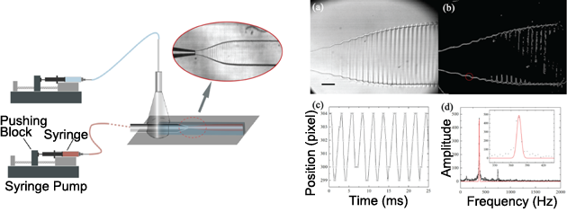

我们的研究集中在使用微纳米技术开发小型化临床检验。具体包括以下如下方向：
- 微流控技术、单细胞液滴包裹与基因测序
- 纳米材料，尤其是碳纳米管的溶液沉积
- 小型化生物检验芯片，例如凝血功能检验芯片
Capillary assisted deposition of carbon nanotube film

Conventional electronics relies on rigid hardware such as printed circuit board and silicon wafers. The emerging field of stretchable electronics requires electronic components to be flexible and stretchable. Carbon nanotube (CNT), owing to its superior electrical properties, has great potential for developing stretchable electronic devices, such as skin-like sensors and health monitoring devices. Compared to direct chemical growth, CNT deposition techniques based on CNT solutions do not require high temperature processing steps and have better compatibility with polymer substrates. However, the existing solution-based CNT deposition methods are either too complicated to implement or not capable of patterning.
In this work, we report a convenient method for CNT deposition and patterning which does not require stencils. Micropillar arrays were fabricated on elastic PDMS substrates before the PDMS surfaces were treated by plasma to render them hydrophilic. After CNT solution was dispensed onto the PDMS substrate, capillary force would spread CNT solution evenly on the PDMS substrate. Solvent evaporation left a uniform deposition of CNT on PDMS substrates. We studied the effect of CNT concentration and micropillar gap size on CNT coating uniformity, film conductivity, and piezoresistivity. Leveraging the piezoresistivity of deposited CNT film, we further designed and calibrated a contraction force measurement device. Our capillary assisted deposition method of CNT film showed great application potential in fabrication of flexible CNT thin films for strain sensing. We envision this capillary assisted deposition method of CNT film as a useful technique for stretchable electronics as well as for force measurement in biomedical researches.
A miniaturized device for point-of-care blood coagulation testing
Heart disease is the leading cause of death in the United States, and dysregulation of blood coagulation is a critical reason. Assays of coagulation functionality can provide critical information for the diagnosis of thrombosis, such as heart attack, as well as bleeding disorders. Current coagulation assays have significant limitations including high cost, large footprint, large sample consumption, and low throughput. My thesis aims to develop a miniaturized device that enables high accuracy, high throughput, and low-cost measurement that can be readily applied for point-of-care coagulation testing. Such a device will provide more reliable measurement with better accessibility, which could potentially lead to more timely diagnosis and treatment of thrombosis. I designed two doubly-clamped beams made from soft materials (PDMS) serving as force sensors, with protrusions at beam centers to hold blood samples. When a blood drop is suspended between the two protrusions, hydrophobicity of the beam material and surface tension ensures that the blood sample acquires a certain shape. This unique design allows highly reproducible localization of blood sample with tiny volume, which is critical for precise measurement. By taking images of the beams and tracking the location of the fiducial markers on them, the contraction force generated can be readily deduced. I confirmed the efficacy of this design by showing the comparability of the readout with a commercialized instrument (Thromboelastography), and its capability to differentiate blood samples treated with anti- or pro- coagulant drugs. This paper was published on Small as a frontispiece. I received Baxter Young Investigator Award in 2016 on this project.
Single cell encapsulation using droplet microfluidics

Immunophenotyping is a technique used to study the proteins expressed by cells, which is usually based on the specific binding between molecules and their antibodies. This technique has been widely used in biological molecule detection in basic science research as well as in clinical diagnosis. An example in diagnosis is the detection of T-cell secretion.
Instead of behavior in a uniform way, individual cell in a cell population normally exhibits heterogeneity, meaning that cells express genetic information differently. Identification of such heterogeneity has significant value in understanding the mechanism of cell behavior and in clinical decision.
In this research, we capture single cell in a microscale droplets, and perform immunoassay (and other bioassay such as PCR) to study the cell-to-cell variation in phenotype and genotype. Briefly, we capsulate cells in aqueous droplets, sort out the droplets with single cell using fluorescent activated sorting, and then perform bioassay using droplet merging or agent pico-injection.
A neural teratogen screening platform based on large scale image analysis

Congenital malformation, or birth defect, is a structural defect in the body due to abnormal embryonic or fetal development, which affects one in every 33 babies in the United States. Environmental factors have profound effect on birth defect. Among these factors, medication in pregnancy is the most important one. However, due to the lack of methods to test teratogenicity (the potential to induce birth defect) of medications, most drugs on the market have limited information about the effect on women in pregnancy. This project aims to develop an in vitro platform for neural teratogen screening, based on neural patterning of human pluripotent stem cells. Besides the experimental part, I designed an algorithm to process large amount of fluorescence images and implemented it. In particular, I used Python to import all the images under a given directory. With each image, the program finds the centroid of the colony and crop it out. The program then calculates the distribution of the fluorescent intensity, which was the time limited step. I designed an algorithm to optimize this step, which took 10 times less time compared to the intuitive algorithm. The intensity distribution represents the differential gene expression, which is a critical information of the drug’s effect on neural differentiation.
An in vitro fluidic platform for long term tracking of tumor invasion


Cancer metastasis is a major cause of most cancer-related death. Evaluation of metastasis potential of primary tumor can provide critical prognostic information. In this project, I collaborated with Dr. Koh Meng Aw Yong to develop an in vitro platform for tumoroid culture and assessment of invasion potential. This platform was designed with universally available techniques, aiming for easy translation to other research labs and clinics. I was responsible for the implementation of the mechanical design and optimization of the flow field. The figure above showed the visualization of the pressure field using COMSOL Multiphysics. The manuscript was published on Scientific Reports. This work was also reported by Michigan Health Lab and Genetic Engineering & Biotechnology News.
Visualization of minute fluctuation in flow rate using aqueous two phase system (ATPS) with ultra-low interfacial tension
Aqueous two phase systems are composed of two immiscible aqueous liquids. The most commonly used ATPS is the PEG-dextran system. The mixture of PEG solution and dextran solution separates into two phases when the polymers exceed a certain limiting concentration. An interesting property of ATPS is that their interfacial tension is ultra-low, normally 100 times smaller compared to water/oil system. This unique property provides a way to visualize the fluctuation in the pressure or the flow rate in the flow.
Syringe-pump-induced fluctuation in all-aqueous microfluidic system: implications for flow rate accuracy
In this project, I used an ATPS and generated a jet of one phase in the other phase. The jet was supplied with a syringe pump, which constantly induced normally negligible minute fluctuation in the flow rate. Given the low interfacial tension of the ATPS, we expected to observe vibrations or ripples on the interface of the jet. Indeed, fluctuation in the flow rate was displayed on the interface, and the we found that the frequency of the ripples matched the frequency of the stepper motor in the syringe pump. This method can be used to detect minute fluctuation in a fluid flow. Details can be found in this publication.
Musical Interfaces: Visualization and Reconstruction of Music with a Microfluidic Two-Phase Flow
Based on the same principle, my colleague and I developed a method to visualize music. By inducing the sound waves into flow, the interface of the jet shakes at different frequency in response to the different musical notes. By capturing the interface using a high speed camera (>1000 frames/sec) and analyzing the images, we could recover the music score. This video shows a dancing jet when listening to Nostalgy. Details of this project can be found in this publication.
English | 中文